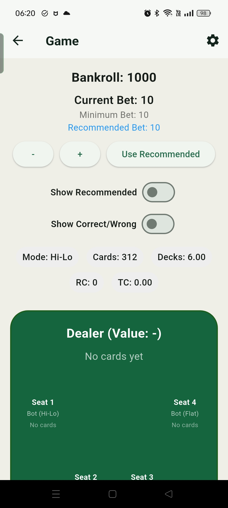
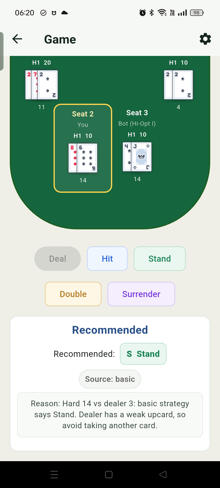
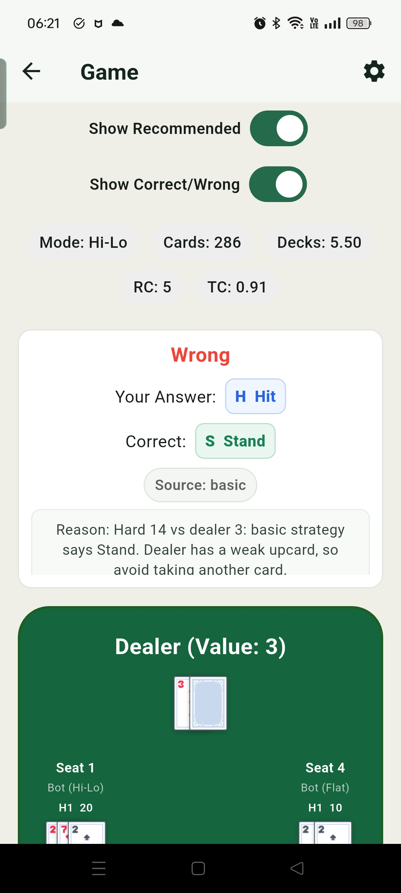
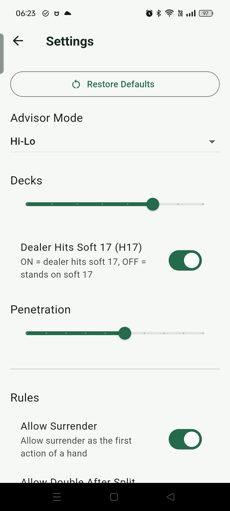
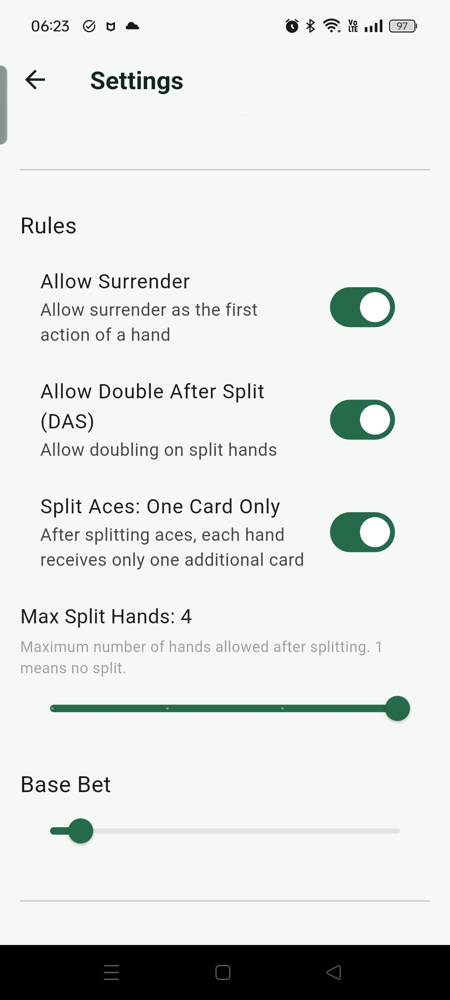
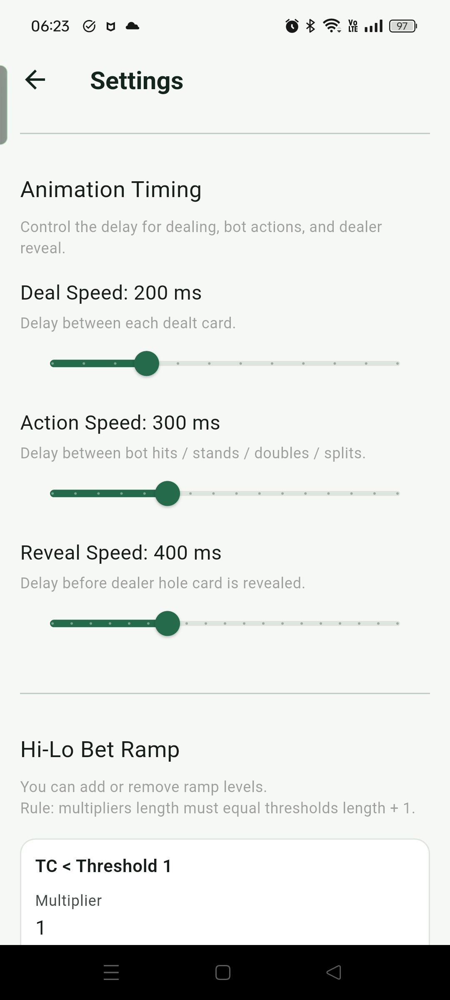
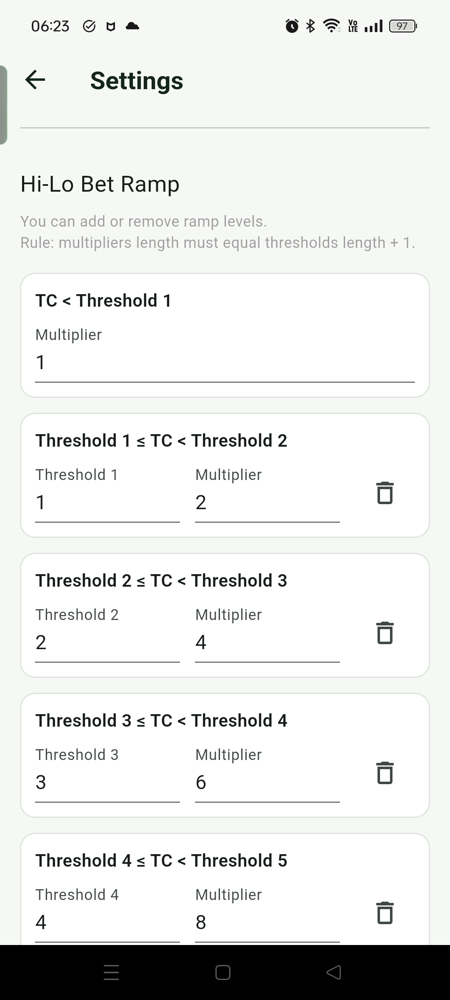
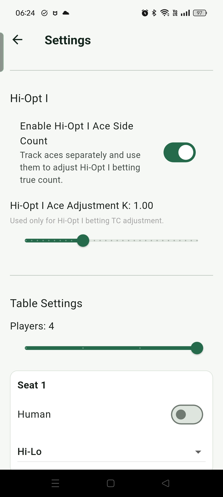
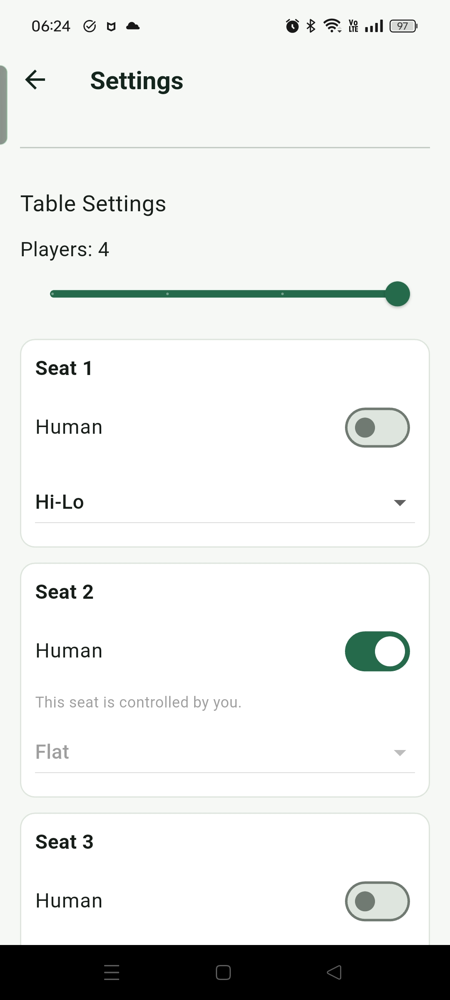

遊戲
遊戲模式用接近實戰的流程練習 blackjack 決策，並把下注、策略建議、算牌資訊與結果回饋放在同一個畫面中。
遊戲流程
遊戲畫面把下注、牌桌、建議、對錯判斷與算牌資訊集中在同一個流程中。使用者可以選擇只靠自己判斷，也可以打開建議與對錯提示，讓 app 在每一步顯示建議動作、判斷結果與原因說明。這不只是背基本策略表，而是用實際手牌理解為什麼某些情況應該 Hit、Stand、Double、Split、Surrender 或買 Insurance。
- 打開建議與對錯判斷後，畫面會顯示建議動作、這次選擇是否正確，以及對應的策略原因，幫助把基本策略和算牌偏離連到真實決策。
- 牌桌上方會依照目前 Mode 顯示 Basic、Hi-Lo 或 Hi-Opt I 相關資訊，包含剩餘牌數、Decks、Running Count、True Count 等數值。
- 牌桌最多可以設定四個玩家位置，也可以選擇自己坐在哪個位置，用比較接近實戰的多人牌桌情境練習。
- 下注區可以手動調整 Bet，也可以點 Use Recommended，讓 app 依照目前算牌系統、True Count 和 Bet Ramp 自動帶入建議下注。
- 右上角的設定按鈕可以調整桌規、牌組數、穿透率、發牌速度、Bet Ramp 和玩家模式，用來建立不同練習情境。



這個模式的設計重點，是讓使用者在接近實戰的節奏中建立記憶與理解。即時回饋可以幫助確認基本策略是否穩定，原因說明則用來補上「為什麼這樣打」的邏輯。對算牌練習來說，畫面上方的 count 結果可以作為對照：使用者先自己追蹤 Running Count 和 True Count，再立刻和 app 顯示的結果比較，修正漏算或換算錯誤。
遊戲設定
設定項目則是用來模擬不同 blackjack 桌況。你可以調整規則、玩家數量、自己的座位、發牌速度、牌組數、穿透率和下注級距，觀察同一套策略在不同條件下的差異，也可以把發牌速度調快，練習在壓力較高的節奏下追蹤 count。
- Bet Ramp 可以設定不同 True Count threshold 對應幾倍下注。這會影響遊戲畫面中的建議下注，也會影響 Replay 回放時，app 如何判斷這一手的下注是否符合目前規則。
- 發牌速度可以依熟悉度調整。剛開始練習時可以放慢，保留時間計算 Running Count 和 True Count；熟悉後再加快速度，練習在更接近實戰壓力的節奏下追蹤牌序。
- 座位設定除了選擇自己的位置，也可以指定其他玩家位置使用 Basic、Hi-Lo 或 Hi-Opt I 等模式。這些座位主要用來建立多人牌桌的發牌情境，讓練習更接近真實牌桌節奏。





